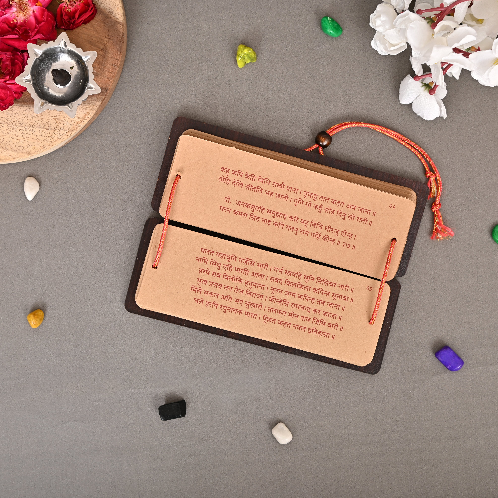
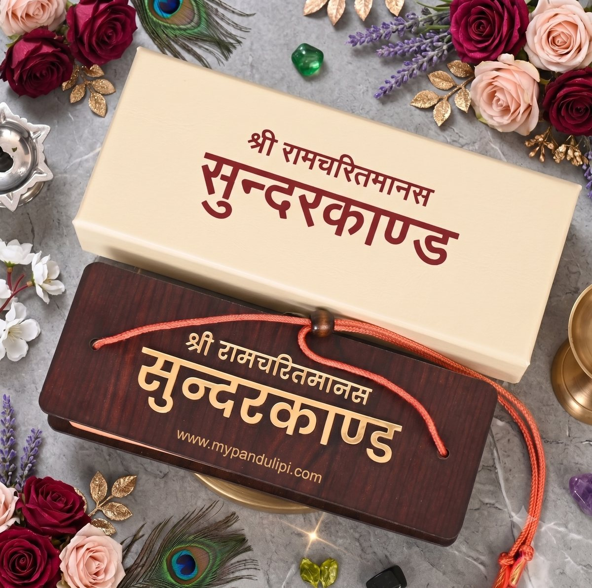
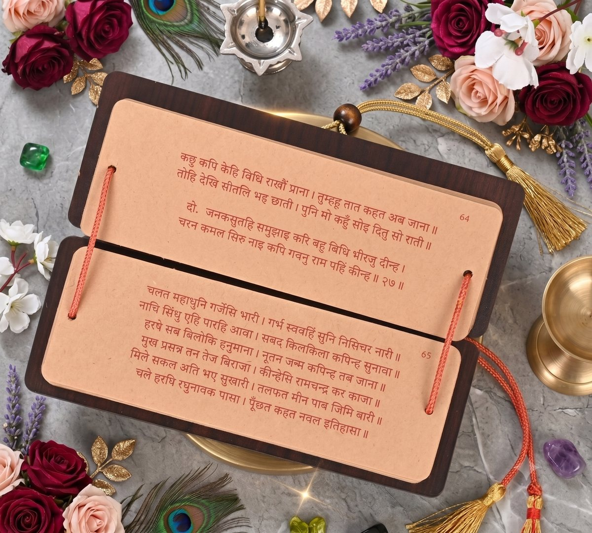
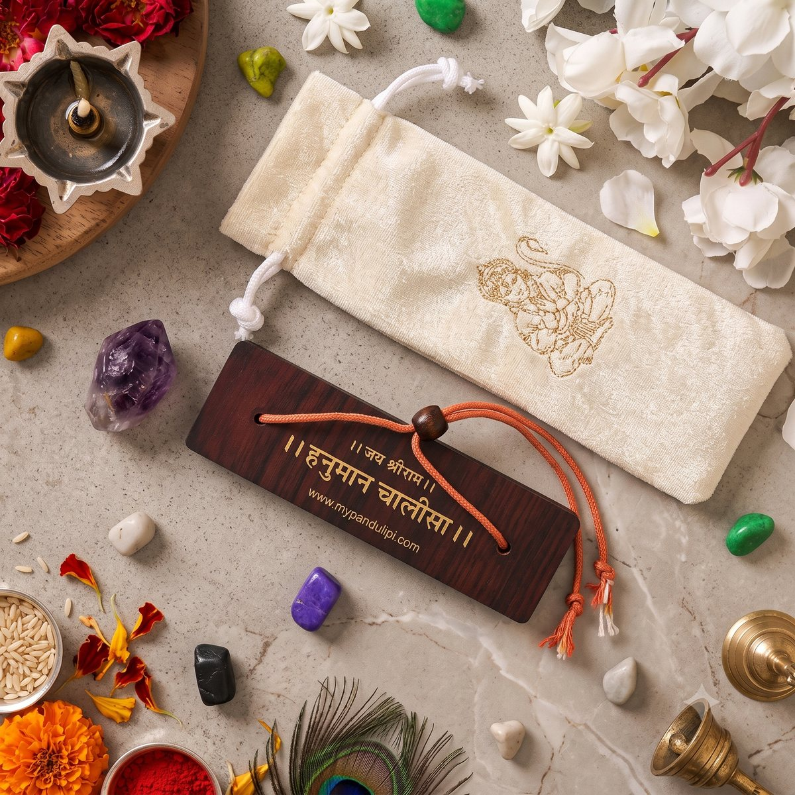
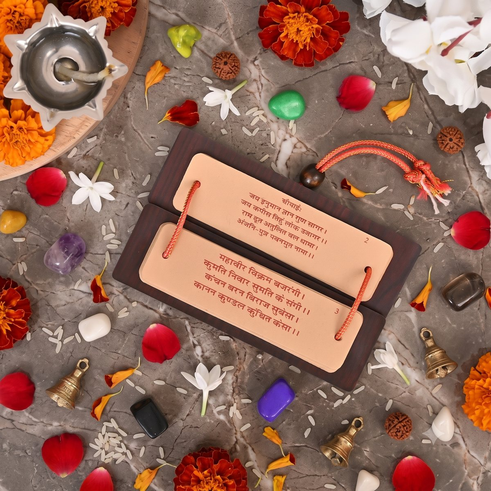

Before print, there was pandulipi — palm-leaf and paper manuscripts, bound by thread, copied by hand, kept for generations. We bring that same feel to Sundarkand, Hanuman Chalisa and the granths you keep closest.

In Sanatan tradition, a granth was never just information to read once. It was written by hand, tied with thread, and kept as an object of daily reverence. Pandulipi is our attempt to bring that same relationship back into homes that now mostly read scripture off a phone screen.
Holding a thread-bound book, turning its pages by hand, is itself considered a form of seva — a way tradition holds that print-on-demand paperbacks don't replicate.
Every piece is sized and finished to sit in a home mandir or puja corner — durable wooden cover, no glue-bound spine to crack over years of use.
Where a card is read once and forgotten, a granth is opened again and again — at weddings, griha pravesh, and festivals, it carries the giver's wish for years.
पोथी पढ़ि पढ़ि जग मुआ, पंडित भया न कोय।
ढाई आखर प्रेम का, पढ़े सो पंडित होय॥
"The world read scripture after scripture and still found no wisdom — it is the few letters of love, read with the heart, that truly make one learned." The form scripture takes in your hands shapes how deeply it is received — that is the belief pandulipi is built on.
— Sant Kabir
Two granths, ready to ship — each one hand-assembled with kraft-toned pages, red ink typesetting, a dark wood cover and a hand-tied binding cord.


The complete Sundarkand in manuscript form — the kaand most read for courage, protection and Hanuman ji's grace, kept exactly as a path pravachak would want it.


A pocket-sized companion piece to the Sundarkand — compact enough to carry to satsang, sturdy enough to live on the mandir shelf for years.
The next granths in the pandulipi library — write to us if you'd like first access when any of these go live.
Gifting for a wedding, a griha pravesh, a festival, or a corporate Diwali hamper? The more you order, the more each piece costs you.
Popular occasions our customers order for:
Short reads on why manuscript-style scripture has mattered for centuries — and why it's finding its way back into homes today.
Long before it was ever printed, the Ramcharitmanas existed only as a handwritten manuscript — and that origin still shapes how it's meant to be read.
Read more →The choice of day isn't incidental — it connects directly to who the Sundarkand is a tribute to, and why that timing has held for generations.
Read more →In Indian tradition, some gifts are remembered for a season. A granth, tradition holds, is remembered for a lifetime — here's why.
Read more →Whether it's a single piece for your mandir or a bulk order for a wedding, write in or call — every order is packed and confirmed personally.
Pandulipi began as one path pravachak's small offering alongside years of free Sundarkand and bhajan seva. Every piece you order helps this stay a family-run, seva-rooted craft — not a mass production line. Thank you for being part of that.